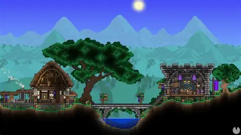
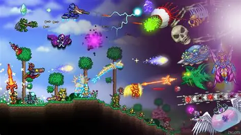

¿QUE ES TERRARIA?
EXPLOANDO EL MUNDO
Terraria es un juego de aventuras en 2D donde cada mundo es único. Puedes excavar, construir y luchar contra criaturas misteriosas mientras descubres tesoros ocultos bajo tierra.
JEFES Y DESAFÍOS
En Terraria, derrotar jefes como el Ojo de Cthulhu o el Rey Slime es clave para avanzar. Cada victoria desbloquea nuevos materiales y armas que te preparan para retos aún mayores.